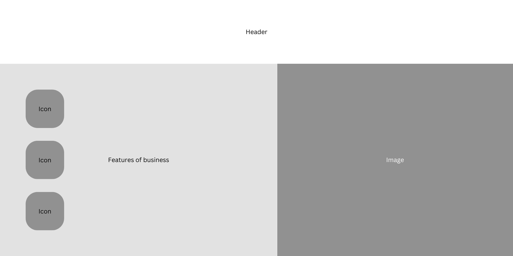

General Site Info
The Hair Salon Website Mockup is a web development project aimed at creating a dynamic and interactive online presence for a fictional hair salon. This project leverages HTML, CSS, JavaScript, and PHP to simulate the functionality of a real hair salon website.
- Real-World Application: Creating a mock hair salon website allows for practical application of web development skills in a scenario that mimics real-world client projects.
- Multi-Technology Integration: This project integrates multiple web technologies, providing an opportunity to practice and demonstrate proficiency in HTML for structure, CSS for styling, JavaScript for interactivity, and PHP for server-side functionality.
- User Experience Focus: By designing the website for a hair salon, the project emphasizes user experience and user interface design, requiring careful consideration of visual aesthetics and ease of navigation.
- Client Interaction: Implementing features like appointment booking and user logins simulate the need for client-stylist interactions and database management, which are common in websites for service-based businesses.
- Responsive Design: The project involves responsive design to ensure the website functions seamlessly on various devices, enhancing accessibility and user engagement.
- Database Management: Incorporating PHP for handling user authentication and appointment management involves working with databases, a critical skill for web developers.
- Creative Freedom: Designing a mock website for a hair salon offers creative freedom in choosing visuals, color schemes, and overall aesthetics, allowing for personal expression and design experimentation.
In summary, the Hair Salon Website Mockup project serves as a practical exercise in web development, combining various technologies and emphasizing user-centric design and functionality. It provides a valuable opportunity to gain hands-on experience in creating a functional and visually appealing website.
Bonus Mark Allocation
Base criteria
I have included the following properties that constitute bonus marks:
Excellent Javascript functionality (integrated it into nearly every aspect of my project)
Well commented HTML / CSS and javascript
Use of an external CSS file to ensure a consistent look and feel of the site and easy changes to the appearance of the entire site.
Efforts to make the site “responsive”.
All but one component of the site is original. The slideshow code was resourced online (at https://www.educative.io/answers/how-to-create-an-automatic-slideshow-with-html-css-and-js) due to errors encountered with my own code and popular codes from other sites. Finding the code required a lot of searching. If it was not for my device's error, this code would as well be original.
Original artwork and photos (slideshow photos all designed by yours truly, most images required a lot of resizing and personalised formatting beforehand)
Cohesive overall appearance and consistency.
Extra criteria
I learnt a whole new coding language (PHP) for the completion of elements of this task.
Immense dedication to making even the most boring pages interesting and responsive.
I had to restart my whole project less than a week away from the due date due to CDN errors.
Professional look and feel (I aimed to make it somewhat reminiscent of a pitch for a website I would submit to an actual company rather than a school project)
No body text or code is generated by AI in order to make it topical and personalised.
User experience is taken into account incredibly - all is tested by external parties to make sure the interface is desirable.
Images and Sourcing
https://newschannel9.com/news/local/a-cut-above-new-tennessee-law-requires-different-kind-of-training-for-stylists-barbers
https://www.cadmen.ca/blog/2022/4/8/successful-female-barbers-top-challenges-and-how-to-crush-them

https://www.amazon.com/stylist-scissors-floral-Vinyl-Sticker/dp/B079Z9R8TN
https://www.pinterest.com.au/pin/16747829852844204/

https://www.latest-hairstyles.com/black/african-american-hairstyles.html

https://www.onmanorama.com/lifestyle/beauty-and-fashion/2020/11/16/coconut-oil-super-ingredient-your-hair.html

https://au.linkedin.com/in/jeremy-kim-46a729205

https://www.buro247.my/beauty/hair/beauty-secrets-how-to-take-care-of-your-hair.html

https://www.filmfare.com/news/this-one-thing-is-troubling-deepika-padukone-a-lot-these-days-24175.html
https://www.istockphoto.com/photo/beautiful-woman-has-cutting-hair-at-the-hairdresser-gm475632357-35253730
https://www.crushpixel.com/stock-photo/woman-hairdresser-applying-dye-man-2436717.html

https://www.freepik.com/free-photos-vectors/mens-grooming/82

https://honey.nine.com.au/latest/silent-hair-salons-customers-requesting-no-talking-hairdresser-appointments-opinion/e2e6b708-fd0a-465b-9d83-b2af38886af7
All other images used I designed myself
Wireframe Diagrams
Note: all the following models are for this site, Hair House. TechTrek was my original idea but was scrapped along with its design ideas.
Nav will be located in the header.
Home Page
Features

Services
Testimonials
Sign Up/Log In
Appointment Booking